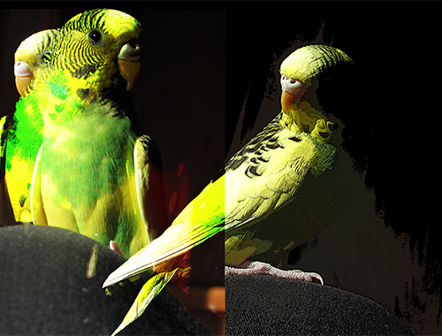
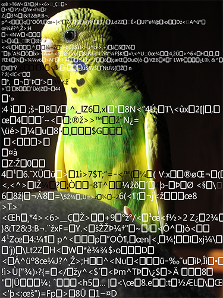
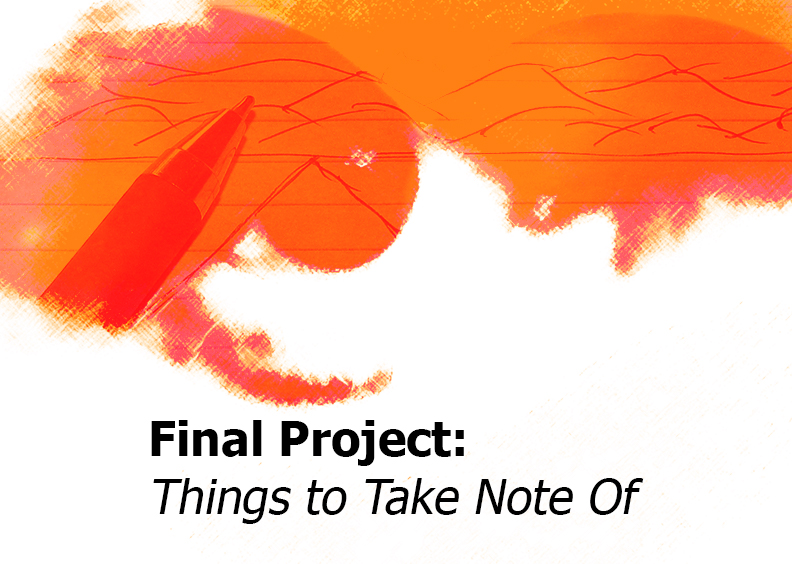

Class Projects



Life Cycle of A Dandelion from Alicia Breinke on Vimeo.
These are some examples of my class projects. Most of the inspiration. The two on the top (left to right) are titled "THE MANY FACES OF NENA" and "WHAT IS MY BIRD THINKING?." My inspration for these came from my bird who had an amazingly big personality. The link on the upper right was created to help people feel more empowered. The one called "LIFE CYCLE OF A DANDELION" has to do with me wanting to portray beauty in the microscopic parts of nature.